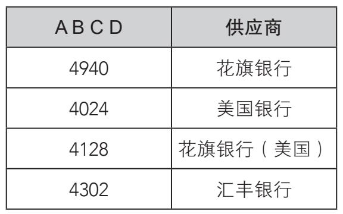
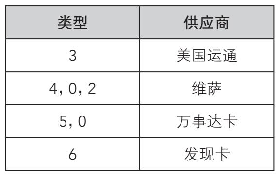
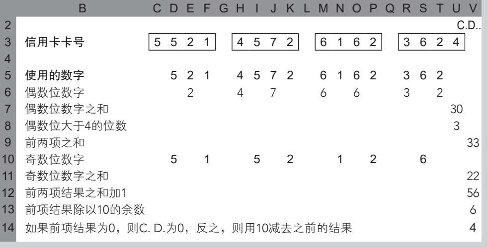
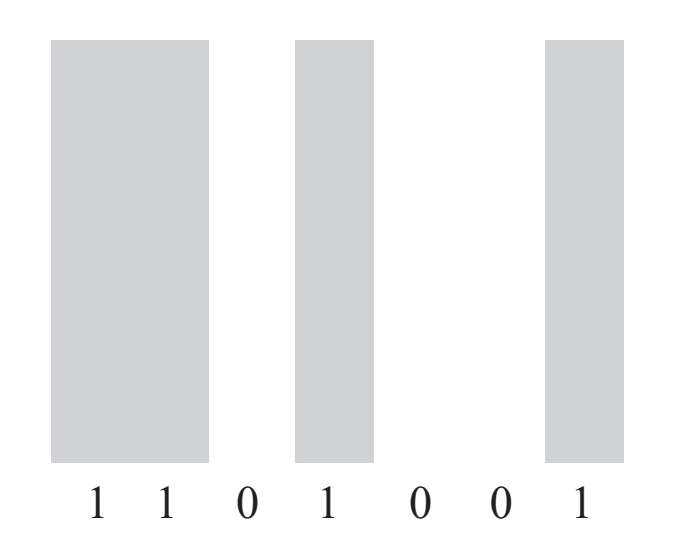
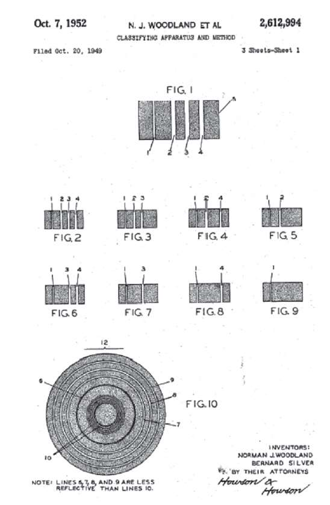
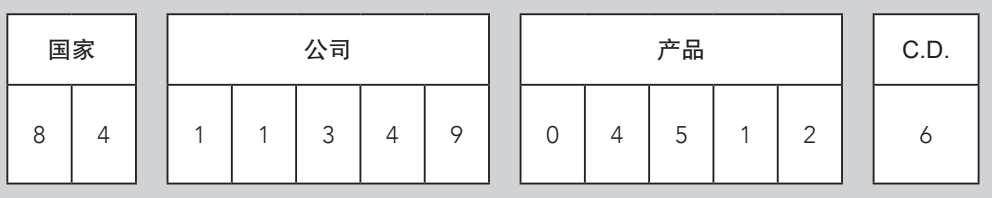
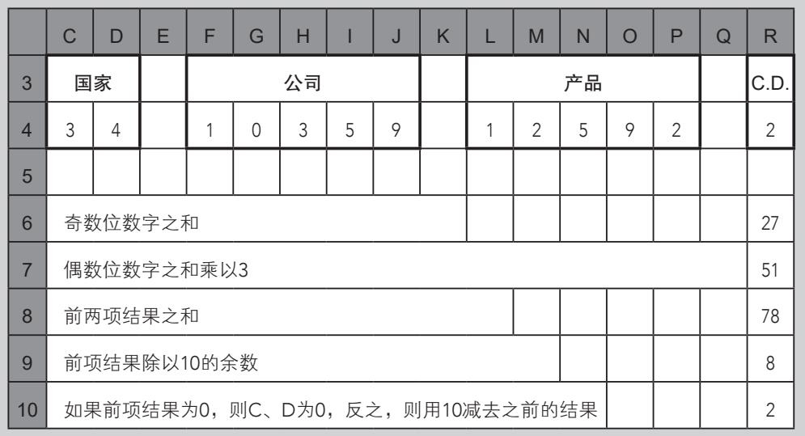
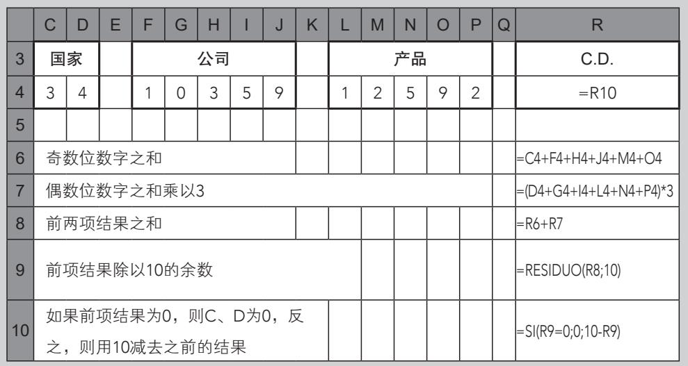
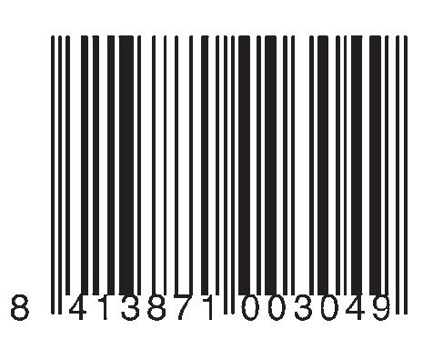
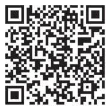

与加密术或二进制数学相比，银行、超市及其他大型商业机构的标准代码虽然逊色不少，而且，虽然它们无处不在，却常被人们忽视。不过其的确是支撑现代社会的支柱之一。说到这些代码，其首要作用是保证诸如银行卡、书籍或苹果等产品身份的独一无二和精确性。下面我们来详细探讨这些代码。
大型银行会为顾客办理借记卡或信用卡，卡主要通过设定好的数字集合来识别，并用同样的算法和验证系统进行计算，这一切都基于我们的老朋友：模运算。大部分卡片上都有16位数字，由0到9十个数字组成。这些数字每四位分为一组，方便读取。为了方便讲解，我们用ABCD EFGH IJKL MNOP表示卡号。
每组数字都代表某些信息：第一组（ABCD）表示银行身份信息（或任何提供服务的机构）。每家银行的ID号码都不一样，根据大洲的不同而不同，同样也与银行卡的商标和条件相关。以维萨（VISA）和某些大银行为例，前四个数字如下所示：

第五个数字（E）代表卡片类型，表示管理该账户的金融机构：

可以看出，这并不是一条铁则，维萨和万事达卡都可以用“0”代表。
其余10个数字（FGH IJKL MNO）是每张卡独一无二的标识符。这个身份信息不仅提供每个客户账号的参考号码，还与这张卡的品牌设计（经典卡、金卡、铂金卡等）、相关信用额度、结算类型的利率以及截止时间相关。
最后还有一个控制数字（P），根据卢恩算法［由德国工程师汉斯·彼得·卢恩（Hans Peter Luhn）开发，并以他的名字命名］，它与之前的数字相关。对于16位数字的银行卡，卢恩算法如下所示：
（1）从左边第一个数开始，每个奇数位上的数字乘以2，计算出一个新数字。如果结果大于9，就把个位和十位上的数字再次相加（或减去9，两种方式会得到相同的结果）。比如，假如结果为18，则1+8=9，或18-9=9。
（2）我们把所有结果加起来计算得出一个和，同时计算得出卡号中偶数位数字（包括最后的控制数字）的和，最后把得出的两个结果加在一起。
（3）如果总数为10的倍数（也就是说，它对于模10为0），那么卡上的数字则是有效的。注意，是最后一位的控制数字使得最终结果为10的倍数。
大来信用卡
大来信用卡是第一批获得广泛认可的信用卡之一。它是由美国人弗兰克·麦克纳马拉（Frank McNamara）创立的。1950年，他努力说服几家饭店接受信用卡支付，这种信用卡是麦克纳马拉给他的最佳客户量身定做的担保卡。最初十几年中，信用卡最常见的用途是给美国旅行推销员支付旅途中的餐费。
以下列卡号为例：
1234 5678 9012 3452
根据卢恩算法：
1×2=2
3×2=6
5×2=10=>1+0=1
7×2=14=>1+4=5（或14-9=5）
9×2=18=>1+8=9
1×2=2
3×2=6
5×2=10=>1+0=1
2+6+1+5+9+2+6+1=32
2+4+6+8+0+2+4+2=28
32+28=60
结果是60，是10的倍数。因此，这张卡的号码是有效的。
还有另一种运用卢恩算法的方法：如果奇数位数字之和的两倍加偶数位数字之和再加卡号中奇数位上的数值大于4的数字的个数，总和是10的倍数，那么卡号ABCD EFGH IJKLMNOP则为正确。说这么多，不如用公式来表达，即2(A+C+E+G+I+K+M+O)+(B+D+F+H+J+L+N+P)+卡号中奇数位上的数值大于4的数字的个数≡0(mod.10)。
计算信用卡号中控制数字的Excel应用
信用卡包括15位数加一个控制数字。卡号四个一组，共分四组。控制数字（简写为C.D.）按照以下算法计算：

还是之前的例子，运用第二种算法：
1234 5678 9012 3452
2×(1+3+5+7+9+1+3+5)+(2+4+6+8+0+2+4+2)+4
=100≡0(mod.10)
我们再一次证明这张卡的卡号有效，同时证明了看似随机的银行卡代码其实遵循严格的数学标准。
如果卡号中的一位数字遗失了，能否找回来呢？只要这张卡是有效卡，是可以找回来的。让我们来找回4539 4512 03X8 7356中的X。
奇数位的每个数字（4、3、4、1、0、X、7、5）乘以2，将它们变为个位数。
4×2=8
3×2=6
4×2=8
1×2=2
0×2=0
X2=2X
7×2=14，14-9=5
5×2=10，10-9=1
把偶数位的数字之和和上述奇数位计算出的结果之和相加：
30+41+2X=71+2X
我们知道，结果一定是10的倍数。
如果X大于4（且小于10），则2X是介于10与18之间的数字。把2X变为个位数：2X-9，因此之前的总和为71+2X-9。如果结果为10的倍数，那么X只有一个值，也就是9；反之，如果X小于或等于4，71+2X不可能为10的倍数。
因此，遗失的数字是9，这张信用卡的完整卡号为：4539 4512 0398 7356。
1952年10月7日，美国人诺曼·伍德兰德（Norman Woodland）和伯纳德·西尔弗（Bernard Silver）申请了第一个条形码系统的专利。早期的条形码与今天差异很大。伍德兰德和西尔弗用的不是我们熟悉的条形码，而是同心圆。1974年，俄亥俄州特洛伊市的一家商店首次正式使用条形码。
现代条形码由一系列黑条（二进制系统中编码为1）和黑条之间的空白（编码为0）构成。条形码被用来识别物体。一般条形码印在标签上，由光学设备读取。这种设备类似于扫描器，测量反射光，然后将明暗条纹转换为字母数字的密钥，再发送给计算机。条形码的标准有很多：编码128、编码39、库德巴码、EAN码（出现于1976年，有8数位和13数位两种）和UPC（通用产品编码，主要在美国使用，有12数位和8数位两种）。最常用的是13数位的标准版EAN码。虽然标准有很多，但条形码可快速识别世界各地的产品，且没有很大的误差。

条形码中，条和空白的宽度与二进制数字对应。

现代条形码出现之前，伍德兰德和西尔弗申请的同心圆专利体系。
计算EAN-13条形码控制数字的Excel应用
EAN-13条形码由12位数字和1个控制数字（C.D.）组成。13位数分为四组：

算法包括以下步骤：

使用Excel，算法的写法如下：

1976年，EAN条形码创立，最初EAN是“欧洲商品编号”（European Article Number）的缩略语，现在是“国际商品编号”（International Article Number）的代称。它是接受度最高的条形码标准，全世界通用。EAN条形码通常包括13位数，用黑条和空白表示，同时还包括二进制代码，方便读取。EAN-13条形码用30个黑条和空白表示这13位数。数字分为三部分：第一部分，包括两个或三个数字，是国家代码；第二部分，包括九个或十个数字，代表公司和产品；第三部分，只有一个数字，就是控制数字。以代码ABCDEFGHIJKLM为例，可以按如下方式分为：
·前两位（AB）是构成产品的原产地代码。
·接下来的五位（CDEFG）代表生产产品的公司。
·再后五位（HIJKL）是产品代码，由生产公司赋值。
·最后一位（M）是控制数字。若要计算控制数字，必须从左开始，将奇数位的数字相加，控制数字不包括在内。然后将偶数位数字之和乘以3，两个结果相加。最后用大于此结果的最小的10倍数减去此结果，就是控制数字的值。可以看出，条形码控制体系与前面信用卡中应用的控制体系相当接近。
下面我们来验证一下这个条形码是否有效：

8413871003049
8+1+8+1+0+0+3(4+3+7+0+3+4)=18+3(21)=18+63=81
正确的控制数字应为90-81=9。
这个算法的数学模型基于模运算(mod.10)，如下所示：
编码ABCDEFGHIJKLM，我们用N表示结果
A+C+E+G+I+K+3(B+D+F+H+J+L)=N
n是N关于模10的数值。控制数字M的表达公式为：M=10-n。此例中，我们得出81≡1(mod.10)，因此控制数字其实是10-1=9。
之前的算法可以使用计算中的控制数字，同样也能表达出来。下面这个方法，能使我们在不需要首先计算控制数字的前提下验证它是否有效：
A+C+E+G+I+K+3(B+D+F+H+J+L)+M≡0(mod.10)
以下面这个代码为例：
5701263900544
5+0+2+3+0+5+3(7+1+6+9+0+4)+4=100
100≡0(mod.10)
因此，此代码有效。
出于好奇心，我们会试着求出条形码中丢失的数字。以下面的代码为例，用X表示丢失的数字：
401332003X497
根据算法，我们列出这个公式：
4+1+3+0+3+4+3(0+3+2+0+X+9)+7=64+3X≡0(mod.10)
对于模10，我们得到下列方程：
4+3X≡0(mod.10)
3X≡-4+0≡-4+10·1=6(mod.10)
注意3有倒数，因为gcd(3,10)=1。
因此，我们得出，X必须为2，有效代码是：
4013320032497
二维码
1994年，日本Denso-Wave公司开发了一种图形加密系统，用以验证装配线上汽车的部件是否正确。这种系统通过特制的机械能够快速读取，因此简称QR（quick response，快速反应，也称“二维码”），后来用途日渐广泛，不再局限于汽车工厂。仅仅几年内，日本大多数手机已能快速读取二维码中包含的信息。二维码是一种矩阵代码，由不同数量的黑白方块组成，依次排列成一个更大的方块形状。黑白方块分别代表的是二进制数值0或1，因此，二维码与条形码的操作非常相似，不过由于加入了第二维度，所以二维码的存储容量要大很多。

日本大阪大学的二维码，行列数为37×37。